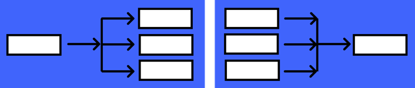

Scatter-Gather Patterns

The Scatter-Gather patterns category provides simple integration solutions that involve the distribution of data to multiple back-end applications and the processing of replies. Examples of patterns in this category include Persistent Aggregation, Non-persistent Aggregation, Collector and Splitter. The patterns in this category mainly utilise the ACE message flow nodes from the Grouping drawer: AggregateControl, AggregateReply, AggregateRequest, Collector, GroupScatter, GroupGather and GroupComplete.